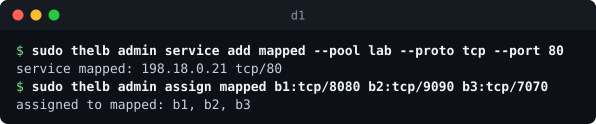
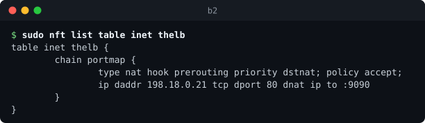
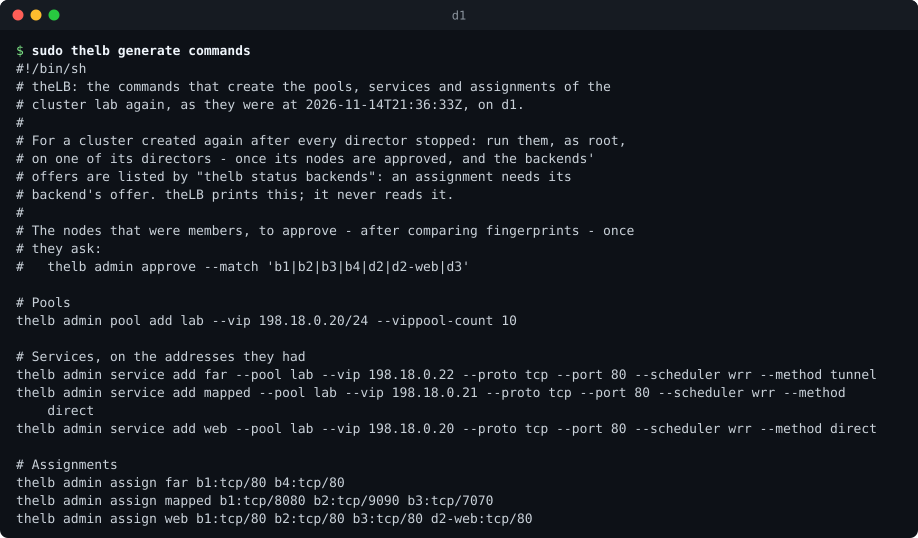

Guides
Pools, services and assignments
A pool holds VIP addresses. A service is a VIP, a protocol and a port. An assignment connects a backend's offer to a service.
All of these commands run on a director. On a director that is not the leader, the change is passed to the leader.
Pools#
A pool is a range of addresses for services' VIPs:
sudo thelb admin pool add main --vip 10.0.0.20/24 --vippool-count 10 # 10.0.0.20 to 10.0.0.29
sudo thelb admin pool add dmz --vip 192.168.50.10/24 --vippool-count 5 --interface eth1
sudo thelb admin pool remove dmz # only when no service uses it--vipis the first address, with its network's prefix.--vippool-countis how many addresses.- The range must be inside the network, must not include the network or broadcast address, and must not overlap another pool, the control VIP or any node's address.
- The leader puts the pool's VIPs on its interface in that network, or on the one
--interfacenames. --defaultmakes this the pool a service uses when it names none.
Services#
sudo thelb admin service add web --pool main --proto tcp --port 80
sudo thelb admin service add dns --pool main --vip 10.0.0.20 --proto udp --port 53 # same VIP, another port
sudo thelb admin service add far --pool main --proto tcp --port 80 --method tunnel
sudo thelb admin service remove dns| Flag | Meaning |
|---|---|
--proto, --port | the protocol (tcp, udp or sctp) and port clients use |
--pool | the pool to take the VIP from |
--vip | a particular VIP from the pool - to put several services on one address |
--scheduler | how to spread connections: wrr (weighted round robin, the default), rr, wlc, lc, sh or mh |
--method | direct (the default) or tunnel - see Direct routing and tunnels |
Without --vip, a service takes the pool's lowest free address - after checking on the network (with ARP) that nothing uses it.
A service's VIP is on the network only while at least one backend serves it. theLB programs IPVS first, then brings the VIP up. When the last backend stops serving, the VIP goes first, then IPVS changes.
Assignments#
sudo thelb status offers # every offer; "-" under service: not assigned
sudo thelb admin assign web web-1:shop web-2:shop --weight web-1=3
sudo thelb admin unassign web web-2You name an offer as node:name - web-1:shop - or as node:protocol/port - web-1:tcp/8080.
Before it records an assignment, the leader checks that the backend really offers it, that the protocol matches the service's, and - for a direct service - that the director has an interface in the backend's network.
Weights go from 0 to 65535; the default is 1. A backend with weight 3 gets three times the connections of one with weight 1. Weight 0 sends no new connections.

As text
$ sudo thelb status offers
node | offer | address | port | check | own check | service | since
------+----------+-------------+----------+--------+-----------+----------+--------
b1 | tcp-80 | 198.18.0.31 | tcp/80 | http / | ok | far, web | 12.0 s
b1 | tcp-8080 | 198.18.0.31 | tcp/8080 | http / | ok | mapped | 12.0 s
b2 | tcp-80 | 198.18.0.32 | tcp/80 | http / | ok | web | 12.0 s
b2 | tcp-9090 | 198.18.0.32 | tcp/9090 | http / | ok | mapped | 11.9 s
b3 | tcp-7070 | 198.18.0.33 | tcp/7070 | http / | ok | mapped | 12.0 s
b3 | tcp-80 | 198.18.0.33 | tcp/80 | http / | ok | web | 11.9 s
b4 | tcp-80 | 198.19.0.41 | tcp/80 | http / | ok | far | 11.6 sPort mapping#
A backend's application can listen on a different port than the service's. Assign web-1:tcp/8080 to a service on port 80, and the backend maps port 80 to 8080 itself, in its own nftables table. The director never changes the port. Each backend can use a port of its own:
sudo thelb admin service add mapped --pool main --proto tcp --port 80
sudo thelb admin assign mapped web-1:tcp/8080 web-2:tcp/9090
As text
$ sudo thelb admin service add mapped --pool lab --proto tcp --port 80
service mapped: 198.18.0.21 tcp/80
$ sudo thelb admin assign mapped b1:tcp/8080 b2:tcp/9090 b3:tcp/7070
assigned to mapped: b1, b2, b3On the backend, the mapping is one nftables rule:

b2 maps the service's port 80 to its application's port 9090.As text
$ sudo nft list table inet thelb
table inet thelb {
chain portmap {
type nat hook prerouting priority dstnat; policy accept;
ip daddr 198.18.0.21 tcp dport 80 dnat ip to :9090
}
}Keeping them: thelb generate commands#
The cluster keeps its state in the directors' memory, not on disk. If every director stops at once, pools, services and assignments are gone. Save them as a script:
sudo thelb generate commands > /root/thelb-restore.sh # again after each change you want to keep
thelb admin commands that create the cluster's pools, services and assignments again.As text
$ sudo thelb generate commands
#!/bin/sh
# theLB: the commands that create the pools, services and assignments of the
# cluster lab again, as they were at 2026-11-15T20:54:31Z, on d1.
#
# For a cluster created again after every director stopped: run them, as root,
# on one of its directors - once its nodes are approved, and the backends'
# offers are listed by "thelb status backends": an assignment needs its
# backend's offer. theLB prints this; it never reads it.
#
# The nodes that were members, to approve - after comparing fingerprints - once
# they ask:
# thelb admin approve --match 'b1|b2|b3|b4|d2|d2-web|d3'
# Pools
thelb admin pool add lab --vip 198.18.0.20/24 --vippool-count 10
# Services, on the addresses they had
thelb admin service add far --pool lab --vip 198.18.0.22 --proto tcp --port 80 --scheduler wrr --method tunnel
thelb admin service add mapped --pool lab --vip 198.18.0.21 --proto tcp --port 80 --scheduler wrr --method direct
thelb admin service add web --pool lab --vip 198.18.0.20 --proto tcp --port 80 --scheduler wrr --method direct
# Assignments
thelb admin assign far b1:tcp/80 b4:tcp/80
thelb admin assign mapped b1:tcp/8080 b2:tcp/9090 b3:tcp/7070
thelb admin assign web b1:tcp/80 b2:tcp/80 b3:tcp/80 d2-web:tcp/80The script holds the commands that create everything again - each service on the VIP it has now - and, as a comment, the command to approve the nodes. It holds no secret.
After a full stop, once a director has created the cluster again:
- approve the directors and backends as they ask - the script's comment has the command (compare fingerprints first);
- wait until
sudo thelb status offerslists the backends' offers - each backend offers again, by itself, what it offered before; - run the script on a director:
sudo sh /root/thelb-restore.sh.